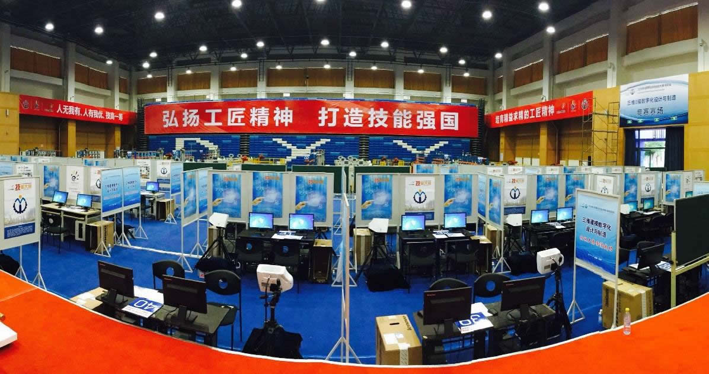
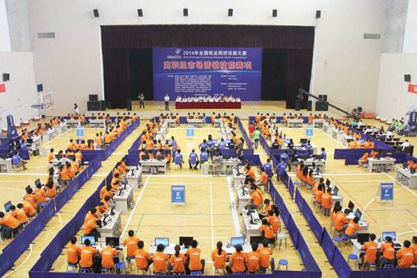
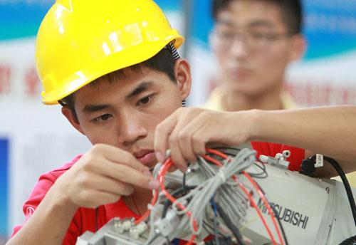

匠心筑梦，静待花开
2016年初李克强总理第一次提出了“工匠精神”这个概念。从此这个热词就频繁出现在我们的身边，这究竟是一种什么样的精神？这种精神又有何种强大s？带着这一串串的疑问，我在《大国工匠》这部纪录片中寻找到了答案。 S
在这部纪录片中，梁剑锋曾说过他在做支撑果盘的四个中国结时右手结了厚厚的茧子，为了能够工作不受影响且完美地完成任务，他便忍痛用指甲剪直接剪掉，由于不停劳作，第二天依旧会再长出一排厚茧，他再剪，反复如此，直至完成。他是一位普通的技工，他虽经历无数次失败，但却寻找原因重头再来；他虽经历一次次受伤，但却咬紧牙关忍住疼痛；只为了能够将一件件工艺品做精，做美、做到极致，我想这便是工匠精神—永不言弃、精益求精、一以贯之……
曾经·彷徨
曾经的我有一个很小很普通的梦想：考上理想高中，然后再考上自己喜欢的大学，成为家人的骄傲。凭着这股信念，初中三年我努力学习，哪怕是中途学习上遇到了瓶颈，成绩有所跌落，我也不曾言弃，奋起直追。我期待着中考，向往着高中生活。直到有一天，老师很遗憾地告诉我：“因为你是随迁子女，由于户籍原因，你不能在上海参加中考，你可以考虑回到原籍中考或者留在上海参加随迁子女考试考取中职校，回去和父母好好商量一下吧。真是可惜了呀！唉……”在老师长长的一声叹息中，我仿佛一下子跌入了人生谷底，犹如一把刀子狠狠地在我胸口扎了一刀，我很疼，很疼厖我开始抱怨梦想离我越来越远，我不知道未来该如何选择，我彷徨、迷茫着，这时我的耳边传来了熟悉的声音：“孩子，这点困难就把你打倒了吗？我们制作一件精美的工艺品要失败无数次，但是我们还是对成功充满期待，永不言弃，这才有看到完美的那一天。”正如《大国工匠》中梁剑锋叔叔通过层层磨练完成艺术品时，执着坚定的语气那样。我沉思良久，我自问：“高中的门被关上了又如何？我要通过自己的努力打开一扇未来的窗户！”。
现在·努力
初中毕业后，我考进了上海市行政管理学校中高职贯通文秘专业，现在我也在班中担任团支书工作
，有了这个平台，更能让我不断提升自我，也更加坚定了自己内心的想法——从现在开始努力奋斗，扎实学好专业知识，将来即使成为有些人眼中一名小小的秘书，我也要成为一名自己心中优秀出色的秘书。
泰山不拒细壤，故能成其高；江海不择细流，故能成其深。那一刻我重振旗鼓，开启了我的新人生。其实中职学习也并不比高中轻松，专业技能和实践经验是必不可少的，作为一名文秘专业的学生，我找准自己的定位，细细品味“工匠”精神，将一丝不苟、精益求精的工匠精神融入我的学习和生活，树立对学习的执着、对专业的敬畏、对细节的打磨，不断追求完美和极致，我想既然我选择了现在的专业，我就要永往直前地走下去。
她，没有做出什么惊天动地的举动，只是一个选择，却让我明白在身边有这样一群人，用自己微薄的力量守护着我们，守护着自己的职业，他们都有
职业生涯规划课上，老师讲了许多在事业上尽心尽职的人们。在我的脑海里第一个想到的便是我的初中语文老师。初三那年，一边是渴求学习更多知识的我们，而另一边正赶上她孩子参加高考，作为一名母亲，她放心不下高考的孩子；作为一名老师，他更割舍不了我们40多个孩子的等待。她，不是什么著名的教师，只是一名普通而又平凡的老师，却恪守岗位敬业尽责；
一个共同点，那就是他们都拥有着“工匠精神”，哪怕艰难险阻也不曾放弃，努力追求自己的梦想，即使是那样的默默无闻，也依旧不断突破自我，奉献自我。现在每当我遇到险阻时，我总会想起这些可敬可爱的人们，这时我便充满动力，继续前进！
未来·期待
在新的征程上,我想工匠精神留给我的,不仅仅是思索和学习，更是一种不变的信仰，转化为坚定的信念、转化为不惧困难的品质、转化为乐观豁达、勇敢创新的品格。现在的我对于未来充满希望和信心，我的人生路还很长，还有很多坎坷要过，可那又如何？只要我坚持不懈，永不言弃，再多的荆棘也阻挡不了我前进的步伐。
未来的我不会彷徨，我有更远大的目标就是成为一名优秀的高级秘书，我要潜心学习我的专业，学精学细，毕业后或许我会从事一个不起眼而又平凡的工作岗位，但是我不会为此而感到自卑、低落，我会把它当成我的事业，不断追求职业技能的完美和极致，凭着专注和执着,努力成为一个领域不可或缺的拔尖人才,我对未来充满信心，充满希望，我依旧期待……
我们是中国人，是一个五千年耕作的民族；是一个最勤勤恳恳的民族；我们是中国人，是曾经用一砖一瓦盖起万里长城的中国人，是为了理想执着奋斗的中国人。
我，传承着中国的血脉，是一个对专业一丝不苟，渴望不断吸收知识的“小工匠”；是一个对工作事业尽职尽责，必将自己的能力发挥到极致的“小工匠”！
我骄傲！我是中国人！